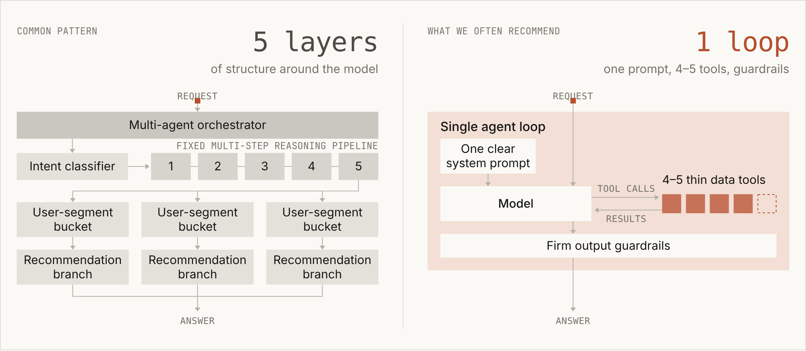
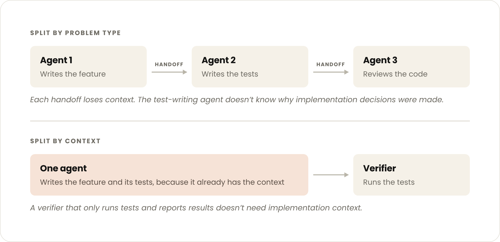

如果你已經在 Claude Platform 打造了一個含有多個子代理的代理，可以用我們的遷移套件（migration kit），看看哪些子代理適合併入主代理迴圈（main agent loop）。它會以引導式工作流程幫你辨識既有模式、評估替代方案，並驗證最佳做法。套件裡附有示範，你可以先在模擬系統上試跑，再對自己的代理動手。
子代理是擁有自己的上下文視窗（context window）、工具與指示，並由協調器（orchestrator）編排的代理，是代理設計的核心元件之一。它們擅長驗證、平行作業，以及模組化權限控管（modular permissioning）。我們在用 Claude Platform 打造的許多代理裡都會用到它們，例如我們的多代理研究系統。
不過，應用 AI（Applied AI）團隊近來發現一種企業代理部署模式：把路由器（router）、規劃器（planner）與領域子代理（domain subagent）併入主代理迴圈後，反而受益。在我們對多個企業部署的比較中，單一代理搭配技能（skills）在品質上經常勝過「一個提示搞定一切」的設計，也勝過子代理設計，而且每項任務的成本與延遲往往更低。
舉例來說，有一家公司發現，面向顧客的代理裡的十幾個專精子代理，讓符合品牌調性的一致體驗很難維持，還增加了延遲，傷害使用者體驗。
我們也經常看到提案中的代理設計走上一條熟悉的路：意圖分類器（intent classifier）、固定的多步驟推理管線、使用者區隔分桶、分開的推薦分支，再在最上面加一個多代理協調器。
在這些案例裡，回饋往往是：這些結構大多在做模型已經不需要別人代勞的事；一份清楚的系統提示（system prompt）、四到五個精簡的資料工具，再加上明確的輸出護欄（guardrails），就能涵蓋大部分使用情境。

圖說（圖中文字為英文原文）：左為「常見模式（Common pattern）」——模型外圍有五層結構（5 layers of structure around the model）：請求先進入多代理協調器，再經意圖分類器、固定的多步驟推理管線（步驟 1 到 5）、使用者區隔分桶，最後走進各個推薦分支才得出答案。右為「我們經常建議的做法（What we often recommend）」——一個迴圈（1 loop）：一份提示、四到五個工具、加上護欄。單一代理迴圈裡有一份清楚的系統提示、模型本身，以及四到五個精簡資料工具的工具呼叫與結果回傳，並以明確的輸出護欄收束後給出答案。
圖片來源：Anthropic／claude.com（原文插圖，動畫 GIF）。
要說清楚：子代理仍有其定位，包括在研究前線。在下列情況使用它們：
- 單一代理迴圈因上下文膨脹（context bloat）而出現可測量的效能下降，或
- 多項任務需要平行處理，並使用可在任務結束後丟棄的全新上下文視窗，或
- 單一代理難以選到合適的工具，或系統提示中存在互相衝突的指示。
但我們太常看到企業依團隊或問題類型各給一個子代理，讓代理架構變成組織圖的複製品（這是康威定律［Conway’s law］在運作）。
本文說明何時該考慮把子代理併入主代理迴圈，以及我們在大型組織打造代理時學到的實務做法。
大型組織打造代理時常見的失敗模式
公司往往希望打造一個代理，把多項產品與能力整合成單一的客戶介面。
通常每項能力由不同團隊負責，因此公司會先讓各團隊各自打造自己的代理，再由中央平台團隊在上面建一個協調器。結構可能有好幾種，包括「協調器—子代理」，或是單一代理、但把特定代理以 MCP 工具（MCP tools）的形式暴露出來。
這看起來像最簡單的解法，卻立刻帶來以下複雜度：
- 上下文管理（Context management）：你必須決定代理之間交換哪些上下文，來回傳遞時又經常會丟失細節。
- 子代理蔓延（Subagent sprawl）：每個團隊都推出自己的子代理，公司最後會有數百個互相重疊的子代理，沒有強制標準，也沒有明確的負責人。
- 科學怪人式提示（The Frankenprompt）：每個團隊都往系統提示裡加一句話，結果規則互相衝突，也沒有一致的語氣。
- 未經審核、過度局部化的評測（Unvetted, overly localized evals）：每個人都加入只為自己子任務過度最佳化的評測（eval）。沒有人擁有或維護整套評測，領導層卻依據被稀釋、過度局部化的分數做決策。
- 延遲（Latency）：多代理架構的複雜度會增加延遲。有一位客戶把他們的多代理框架（harness）拿來對照單一代理迴圈，後者的執行時間大約快了兩倍。
使用具有漸進揭示的代理迴圈
上文描述的「協調器—子代理」設計，用來協調跨團隊打造的專精角色是合理做法；但往往更有效的做法，是透過技能漸進揭示上下文，以及透過工具搜尋（tool search）漸進揭示工具。換句話說，代理先看到技能與工具的簡短說明，只有需要時才完整載入。
這個做法之所以合理，有三個理由：
- 共享上下文能產生更好的答案：對運行時間較長的代理來說，我們希望多項不同任務的上下文都留在主上下文視窗裡。看過稍早每一步結果的代理，能夠把它們串起來，產出比子代理交回的一組摘要更豐富的輸出與洞見。這也意味著更少的上下文視窗、更少會失真的交接（lossy handoffs）。
- 漸進揭示能避免上下文膨脹：這個技巧讓團隊能打造可完成多種任務的單一代理，而不必把所有上下文立刻載入一份很長的系統提示。這消除了團隊過去把工作拆給子代理的主要理由。事實上，我們曾把 Claude Code 給較進階模型使用的系統提示縮減超過 80%，其中就包括與漸進揭示技能與工具相關的刪減。
- 模型能力更強了：從 Opus 4.5 開始，模型在單一迴圈裡能管理的範圍，遠超過多數團隊的預期。在 Opus 5.5 與 Fable 5.1 上，你無法關閉思考（thinking）；近期模型也越來越會一邊工作一邊敘述進度並檢查自己的成果，這讓某些框架元件變得多餘。每推出一個新模型，你就可以把更多決策從框架移到模型本身。更簡單的迴圈也更容易換到下一個模型；在我們協助客戶的遷移中，僵化的多代理結構常常正是讓新模型無法承擔更多工作的原因。
單一代理迴圈的設計需要紀律：仔細管理的系統提示、能在對的時機被觸發的技能與工具說明，以及對上下文視窗、記憶與筆記的刻意處理。本文後續章節會更深入討論遷移與設計上的考量。
應由一個中央團隊負責端到端品質與系統提示，並在每個新工具與評測上線前先審核。讓這個中央團隊保持精簡，有助於快速迭代，也降低大型組織裡的協調成本。
若你仍走多代理路線，請從可能奏效的最簡單模式開始（產生器—驗證器［generator-verifier］、「協調器—子代理」，或其他模式）。有效拆分邊界的方法是依上下文來切分：給每個子代理一塊不太需要系統其餘部分的工作，並讓它交回精簡的結果（適合的候選包括獨立的研究路徑、介面清楚的獨立元件，或黑箱驗證）。當代理是依問題類型來拆分時，它們會陷入「傳話遊戲」（telephone game），資訊來回傳遞，每次交接都會降低保真度。

圖說（圖中文字為英文原文）：上排「依問題類型拆分（Split by problem type）」：代理 1 撰寫功能，交接後由代理 2 撰寫測試，再交接給代理 3 審查程式碼。說明寫道：每次交接都會丟失上下文；負責寫測試的代理不知道實作決策為何如此做出。下排「依上下文拆分（Split by context）」：一個代理同時撰寫功能與其測試，因為它已經擁有上下文，再交給驗證器（Verifier）執行測試。說明寫道：只負責跑測試並回報結果的驗證器，並不需要實作上下文。
圖片來源：Anthropic／claude.com（原文插圖）。
如何把子代理併入主代理迴圈
許多團隊在正式環境中已經有一個協調器，以及一組專精代理。以下是我們建議朝之邁進的單一迴圈設計：
- 一個模型、一個上下文視窗，執行開放式的工具迴圈（tool loop）；回合與成本預算、寫入閘門（write gates）等限制，則設在框架裡。
- 每一回合，模型會發出一批工具呼叫。框架平行執行它們，把原始結果交回同一個模型，再由模型決定下一步：再發一批呼叫、向使用者提問，或給出答案。
- 當模型給出答案，或碰到預算（budget）時，迴圈就停止。答案之後，可以選擇再跑一輪目標或驗證器檢查。
- 模型在第一回合就把計畫寫進上下文，並隨結果到來而修訂。這是與「協調器加專精代理」設定最主要的差異：寫計畫的模型，同時也是執行計畫的那個模型，因此它可以在回合進行到一半時改計畫。
- 上下文仍會被載入，但由代理自己管理：
- 不再需要一個從規則目錄改寫計畫的程式步驟，因為每一步都由模型決定。
- 排序與領域程序移入技能。
- 硬性限制（驗證、核准閘門［approval gates］）以及對話中途才出現的其他事項（例如記憶查詢）移入工具。
- 程式碼仍可用來載入便宜、而且幾乎總是相關的內容（例如實體解析［entity resolution］步驟），並在迴圈所呼叫的工具裡處理機械性的部分（組裝承載資料、解析串流、接續一輪澄清）。
這種單一迴圈設計，也有助於許多團隊正在朝之邁進的終態（一個能理解使用者高層目標、並代為行動的代理），因為它把代理學到的一切都留在同一個上下文裡。
以下建議說明一個團隊如何分階段，從多代理系統走到單一代理迴圈，以及多個團隊如何沿途持續為這個代理做出貢獻。
任務完成評測（Task-completion evals）
第一步是建立一套評測集，幫助你判斷是否該把某個子代理併入主代理迴圈。我們見過有效的評測結構是：由中央團隊擁有一份共享的端到端評測集，再加上各技能所屬團隊隨技能一併交付的較小評測集。即使只有 10 個黃金範例（golden examples），也足以開始。
依評分規準（rubric）為代理的最終訊息打分，是追蹤答案品質的好起點。只要你還有協調器，也應該追蹤路由正確率（routing accuracy；它有沒有選對子代理？）。子代理被併入後，改為檢查代理是否載入了正確的技能，或呼叫了正確的工具。隨著時間推進，朝任務完成評測努力會很有幫助，因為在比較架構時，這才是最要緊的事。
在內部系統難以重播、使用者參與又難以模擬的環境裡，這可能相當複雜。我們內部有效的一種做法，是在重要事件上記下時間戳記，以便之後重播，作為針對性評測來執行。
逐步減少子代理
朝單一代理迴圈演進，意味著把子代理併入工具與技能。做法可以是合併領域子代理、把它們當工具呼叫，或以技能與工具取而代之。

圖說（圖中文字為英文原文，動畫會演示合併過程）：左「合併子代理（Merge subagents）」：主代理底下原先有 A、B、C、D，動畫中會收成「A＋B」「C＋D」各一個子代理。說明寫道：把共享上下文的子代理合併，數量就會變少。中「把它們當工具呼叫（Call them as tools）」：主代理透過工具呼叫，向各個子代理取得結果。說明寫道：主代理把每一個當工具呼叫，並繼續掌握對話。右「折進技能與工具（Fold into skills and tools）」：子代理的提示變成技能，它們的 API 呼叫變成工具。
圖片來源：Anthropic／claude.com（原文插圖，動畫 GIF）。
合併領域代理
第一次合併之前，先建立一套小型的端到端評測。然後依共享上下文來併入，從使用最頻繁的子代理開始。
合併專精角色的對象，是會串接彼此輸出、會碰到同一份資料，或經常被一起呼叫的那些。例如，若正式流量有相當比例是一個專精角色之後接著另一個，那就是緊密耦合的一對，適合合併成一個領域代理。
把子代理當工具呼叫
當上文三個條件之一成立、而你仍要保留某個子代理時，讓主代理把子代理當工具來呼叫通常很有效，這樣主代理就能繼續與使用者對話。
我們只會在子代理需要直接與使用者交談時，才建議做完整交接（由子代理接手對話）。其餘情況都可以做成主迴圈裡的技能加上工具。
這讓你能為子代理定義共享的回應結構（shared response schema），由主代理用真實資料核對結論，並修剪進入最終綜合步驟的輸入。這是很好的第一步，因為你不必改寫子代理。它也為你在任務完成評測上提供一個基準（baseline），再決定要不要把任何子代理併入主代理。
不過，有些失敗模式仍然會在：
- 每個專精角色都有自己的提示、上下文、負責團隊與評測
- 每次呼叫仍會交回有損的摘要
- 每一次呼叫都是巢狀的模型迴圈，會增加延遲
透過技能與工具把子代理併入主代理
一次併入一個子代理：把它的提示變成技能，把 API 呼叫變成 MCP 工具。比較有無該子代理時的評測表現，再決定哪些該留下。
比較時，不要只看最終分數，也要看哪些任務的結果翻盤了。我們在一個範例客服代理上測試時，把一個子代理併入另一個雖然降低了延遲，卻也弄壞了一個原本能通過的流程。主代理自己握著訂單查詢工具並自行作答，沒有向物流專精角色詢問送達日期。
每次改動之前，確認你的評測涵蓋了正式環境中一起運行的每一條代理鏈，以及代理不得違反的每一條規則；而且每項任務要跑超過一次，因為像這次的破綻，兩次裡只出現了一次。
多個團隊如何共同貢獻同一個代理
領域推理可以從知識庫（knowledge bases）、技能與 MCP 工具中取回。各團隊可以把所有權從代理轉到技能與工具，由一個精簡的中央團隊持續擁有系統提示與端到端品質。這包括在新的技能、工具與評測上線前先審核。
MCP 工具
當代理需要採取行動、從系統讀取即時資料，或以固定形狀回傳結果時，工具是合適的選擇。你也可以在遷移期間，用工具繼續呼叫子代理。我們建議依使用者意圖來分組工具（而不是一個 API 一個工具），因為系統提示裡的工具定義一旦超過 30 到 50 個，工具選擇往往就會變差。
搭配延遲載入使用工具搜尋，限制硬性前置條件，並把真正需要的條件移進工具裡。例如，若 Y 需要 X 的輸出，就由 Y 的工具檢查它是否存在，並回傳模型可以據以行動的指示。依使用者而異的權限也是同一套做法。每個工具檢查呼叫者可以看到或可以做什麼，並回傳模型讀得懂的明白拒絕，這樣一個迴圈就能服務權限不同的使用者，不必為每個權限等級另設一個代理。
技能
當代理需要知道某個團隊如何做事——例如專精子代理的提示裡原本承載的步驟、規則與判斷——技能就是合適的選擇。
我們擴充技能庫的做法，是把維護工作交回給撰寫技能的人。Claude 可以用能打造、測試並精簡其他技能的技能，扛起繁重的部分。
為了防止技能蔓延，可以讓各團隊的直接負責人（DRI）擁有自己的技能，並確保它們寫得好、彼此有區別，且附上適當的評測再上線。
/skill-creator讓你撰寫一開始就形制良好的新技能，並稽核既有技能，進行精簡、去重與重整。/skill-doctor讓你看到技能庫裡每個技能的成本、實際被使用的頻率，並刪除無效負擔。
知識庫
知識庫適合放代理只在部分時候才需要的參考資料。事實與參考資料（政策、指標定義、產品規格）可以放在模型會呼叫的搜尋或查詢工具後面，或作為技能內的參考檔案一併交付。避免讓程式把這些上下文取出來貼進提示。
能加快這項工作的工具
我們最近發布了一組 Claude API 技能，能協助完成上文提到的大部分工作。我們的遷移套件把這些技能串成一套引導式工作流程，用來評估多代理系統，並遷移到單一代理迴圈。套件裡附有示範，你可以先試跑，再拿真實系統來用：
/claude-api build-eval：可協助建立由中央團隊擁有的第一套端到端評測，或各團隊隨技能交付的小型評測。/claude-api prompt-audit：能標出你的提示、技能與工具說明裡、為舊模型撰寫的指示，並以 diff 的形式提出修正建議。可以對系統提示執行，找出任何為較早模型加上、如今卻讓代理更慢或更僵硬的規則。各團隊的直接負責人也可以對自己的技能與工具說明執行。/claude-api hillclimb：能依既有評測反覆改進應用。可用於「已併入 vs 保留」（folded in vs kept）的比較（把一個子代理併成技能加上工具後，讓它迭代技能與工具說明，看併入後的版本是否追平或勝過原本的子代理），也可用於你的系統提示。/claude-api cost-optimize：分析呼叫落在何處，並一次只改一樣，從提示快取（prompt caching）、修剪不必要的輸入與輸出 token、努力程度（effort）與模型選擇等選項提出節省建議。這有助於在既定設計上把成本與延遲降下來。
隨著模型演進，我們對如何善用它們的理解，以及圍繞最佳實務的指引，也會跟著演進。這讓任何單一架構都不如背後的原則重要：先測量，一次只改一件事，並留下經得起考驗的部分。
這正是這樣的案例。隨著模型能力更強、代理運行時間更長，你的子代理會有更多可以變成技能與工具。不過，你不必一步就走完。先建立一套小型的端到端評測，併入一個子代理；只有在併入後的版本分數更差時，才繼續把它當子代理保留，然後重複這個過程。